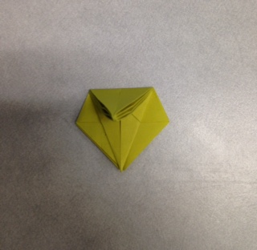
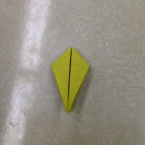
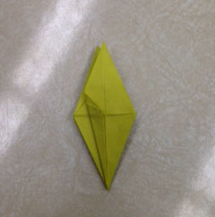
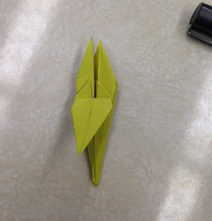

Start with your completed Base 1, and fold the left edge to the centre crease.

Unfold. You should have this.

Open the fold you just made from the bottom, lifting only the top layer as shown:

Flatten down the fold, so that the crease that was your edge now lines up with the centre crease.

Take the right edge of your flattened fold, and fold it to the left.

Now fold the right edge to the centre crease, and repeat steps 2 - 4 for each side.
Yo ushould end up with something like this.
This should be the view of your unit from the side.
If there are too many edges on one side, feel free to just move the pieces of your unit around until both sides look the same.

Set your unit flat, so that the open part is at the bottom, and fold the bottom edges into the centre crease.

Now fold the top point down to meet the bottom point. This crease will be very helpful later.
Unfold.

Unfold your edges. Your unit should look like this at this point.

Now take the top layer of the bottom edge, and open it up, folding your outside edges in as you do so.

Make sure that your two points meet, and then flatten your folds.

You should now have a neat little diamond at the top of your unit.
Now, repeat steps 10 - 16 for each side.

You should end up with something like this.
Now, rotate your unit 180 degrees, so the tips of your points are at the bottom.

Fold the top layer point upward.

You should end up with something like this.

Repeat this for each side.
Fold the left edge to the centre crease.
I like to use the metal bit on the side of a pen to make cleaner creases, especially if the paper is small.

Fold the right edge to the centre crease.

Repeat the last two steps for each side of your unit. It should look something like this.

Grab the tip of one of the points, and fold it downward as far as it will go.

It should end up looking like this:
Repeat the last step for each petal on your unit.
And that is your completed lily! If you'd like, you can curl the tips of the petals a little with a pencil.